全部主題
David Robinson used to write the safety reports that accompanied every major model release at OpenAI. This week, he resigned from his position and is now speaking out in an editorial in The Atlantic. It's understandable if you're feeling a bit cynical about everyone suddenly comi
Millions have downloaded Meta’s AI agent Muse. But getting it to do your bidding comes with privacy costs.
IT之家 10 月 3 日消息，Amazon（亚马逊）Strands Agents 团队当地时间本月 1 日宣布推出 Strands Decider 2B 决策模型。其已在 GitHub 上开源，权重则可在 Hugging Face 上找到； 可在本地的 CPU / GPU 上运行 。 Strands Decider 2B 基于预训练的 Qwen3.5-2B“躯干”， 以具备评分功能的指针“头部”替换拥有文本生成能力的原有语言模型“头部” 。新“头部”规模较小，总参数仅略超过一百万；“躯干”则通过一个 rank-16 LoRA 适配器进行微调。 Stra
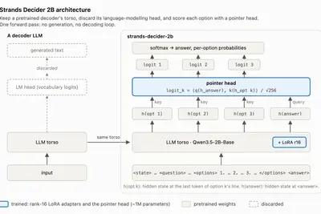
IT之家 10 月 4 日消息，当地时间 10 月 3 日，美国财政部长斯科特 · 贝森特（Scott Bessent）在接受 Axios 采访时批评部分 AI 行业人士针对人工智能“生存性风险”发出的警告。 他认为仅仅发出危言耸听的警告、却拿不出具体解决方案，并不能称为领导力。他同时呼吁 AI 实验室负责人承担安全责任，并在确保安全的前提下继续推进 AI 发展。 贝森特表示：“我们必须为各种情况做好准备，但另一方面，AI 界某些人只发出危言耸听的声音，却拿不出解决方案，这不是领导力。” 此前，Anthropic CEO 达里奥 · 阿莫代伊（Dario
IT之家 10 月 4 日消息，眼下玩家群体正在放开手脚使用人工智能，依靠它打造各类全新的融合游戏作品，同时借助重编译突破老游戏原有的限制。不过这股风潮或许即将迎来来自 IP 持有企业更强的阻力。 据IT之家了解，《辐射：纽约》是一款完全依靠 Claude Opus 5.5 生成代码制作的浏览器游戏。制作者克里斯弗斯特（Chrisfirst）表示，整个开发过程只花了五天，全部内容都由代码生成。这款游戏采用低多边形画面水准，算不上一款现代游戏，它更多只属于概念验证，用来展示这类开发方式能够实现怎样的效果。现在贝塞斯达已经发送停止侵权函，叫停了这个项目。 这
IT之家 10 月 4 日消息，《GTA 6》将于下个月在全球发售，玩家对这款作品的期待已经达到顶峰。Rockstar Games 为这款即将面世的开放世界游戏设立了很高的目标，表示希望交出超出玩家预期的成果。 虽然绝大多数玩家都期待《GTA 6》能够成为一款高品质作品，但这部知名系列的新作将是系列当中第一部没有 Rockstar 联合创始人丹 · 豪瑟（Dan Houser）参与开发的游戏，他已于 2020 年离开了这家公司。而豪瑟本人的工作室眼下正在打造几个十分有意思的新项目，其中就包含一款和人工智能相关的作品。 IT之家注意到，在接受 Variet
IT之家 10 月 4 日消息，3A 游戏的开发成本正变得越来越高，开发周期也不断拉长，就连卡普空（Capcom）这类根基稳固的工作室也感受到了由此带来的连锁冲击。眼下许多工作室开始把人工智能引入游戏开发以及游戏引擎当中，借此跟上行业节奏。 卡普空现已宣布，要将 RE 引擎改造为适配人工智能时代的游戏引擎。今后这款引擎将会陆续获得迭代更新，以此简化游戏开发工作，这也是卡普空提出的“与人工智能协同创作游戏”这一新理念的组成部分。 卡普空过去曾经反对在游戏内使用 AI 生成的美术资源。虽然该立场或许已经有所转变，但 RE 引擎当中接入人工智能，大概率只会侧重
IT之家 10 月 4 日消息，Qwen3.8‑27B 是一款性能不错的人工智能模型，但前提是设备拥有足够的显存与系统内存。搭载 M4 Pro 芯片的 MacBook Pro 仅有 24GB 统一内存，在运行该 AI 模型时，预填充速度会因此受到限制。据 Wccftech 报道，有一名用户通过 USB‑C 接口将 iPhone 17 Pro Max 外接至这台便携 Mac 电脑上，并借助自制软件，使得该 AI 模型的预填充性能最高提升了 44%。 IT之家注意到，为突破这台 Mac 24GB 统一内存的上限，Reddit 用户“u/StayLameBro
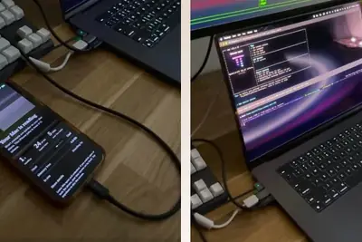
IT之家 10 月 4 日消息，OpenAI CEO 萨姆 · 奥尔特曼（Sam Altman）昨日在 X 上发帖，对将 AI 模型视为“宗教力量”的倾向表达了明确反对。 他表示：“对于人们试图赋予 AI 模型某种宗教力量、或是放弃人类自身判断力而转而依赖这些模型，我感到非常不安，并认为这是一个切实的安全问题。” 《纽约时报》10 月 2 日报道称，Anthropic 联合创始人克里斯 · 奥拉（Chris Olah）在过去一年中主导且参与了一系列与宗教领袖的私下会面，包括天主教、犹太教、锡克教、福音派基督教等，讨论的核心议题包括 AI 模型是否可能已经
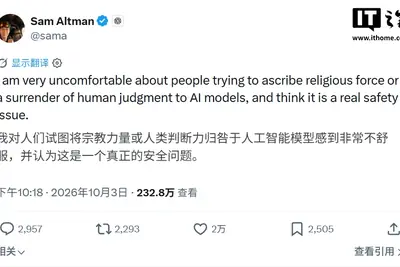
IT之家 10 月 4 日消息，特斯拉首席执行官埃隆 · 马斯克（Elon Musk）做出说明，该公司的 AI5 芯片不会采用 72GB 的 DDR5 内存，而是改用 96GB 内存。这样做是为了避免只有特斯拉一家为驱动擎天柱（Optimus）人形机器人的这款芯片采用最低 72GB 的配置标准。 马斯克此前曾表示，特斯拉已经把 AI5 与 AI6 芯片的内存削减一半，目的是在全球历史性的内存紧缺背景下保障内存的供货。他在发表这番看法时还承认，过度依靠人工智能开展编程工作可能会引发人工智能精神病，出现这种状况之后，就没有办法向其他人解释人工智能究竟取得了哪
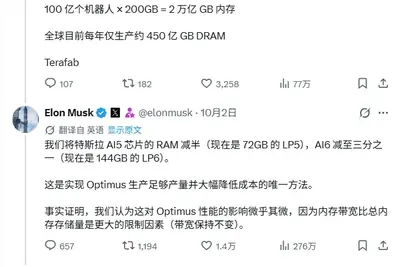
The CEO of Amazon Web Services tried to push back against widespread suspicion of data centers.
Article URL: https://claude.dev/blog/getting-the-most-out-of-opus-5-5/ Comments URL: https://news.ycombinator.com/item?id=49946567 Points: 146 # Comments: 103
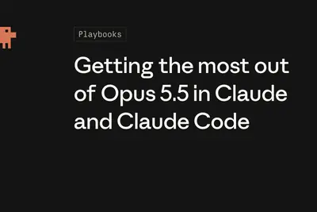
The price of anything with memory is skyrocketing thanks to AI. Aging streaming devices are no exception.
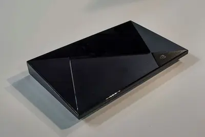
Capcom's Pragmata might be all about the horrors of AI, but in practice the studio doesn't seem so down on the tech. During the Capcom Open Conference RE: 2026 programmer Satoshi Ishida gave a presentation with the mouthful of a title: "The Outlook and Future of the REX Project,
IT之家 10 月 4 日消息，在 10 月 1 日的华为 Mate 90 系列及全场景新品发布会上，华为年度旗舰 Mate 90 系列手机正式发布。其中，Mate 90 Pro Max / RS 非凡大师搭载的是首款逻辑折叠 τ 芯片 —— 麒麟 9050 Pro。 根据华为官方介绍，麒麟 9050 Pro 是麒麟性能新巅峰，通过软硬芯云垂直整合， 整机性能提升 31% 。这枚芯片 CPU 还支持 9 核 16 线程超线程技术，多核性能提升 23%、GPU 渲染性能提升 40%、NPU 性能提升 140%。 极客湾发布了一期针对华为 Mate 90 P
Kakul Srivastava is the CEO of Splice, the sample platform countless producers rely on for one-shots and melodic loops. Samples pulled from the service have found their way into massive hits like Lisa's "Money" and "Espresso" by Sabrina Carpenter. (The original samples are here a
IT之家 10 月 3 日消息，海马云 (haimacloud) 近日推出了 haimacloud GEAR 端云混合掌机。其本地 采用高通骁龙 865 移动平台 ，运行 Android 13 操作系统，支持海马云的云游戏服务。 该掌机 拥有 8GB + 128GB 的存储器组合 ，搭配 7" FHD 144Hz 2ms 800nits OLED 屏幕，内置 8000mAh 电池，具备主动散热、TMR 摇杆、霍尔扳机、机械微动按键、六轴体感，ABXY 为模块化设计，支持 Wi-Fi 6 & BT 5.1，质量 450g。 IT之家获悉，配套的云游戏服务基
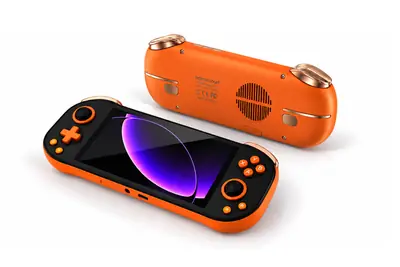
We created a list of the most notable AI agents that can live in your text messages, from general assistants to agents designed for families, travel, and work.
英國研究員運用人工智慧（AI）與機器人，將全國各地收藏的自然史標本數位化，打造線上「超級博物館」。民眾用手機或 […]
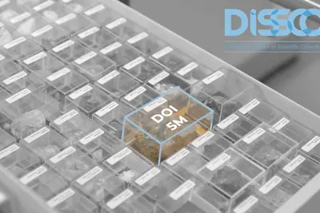
【新北市訊】新北市政府青年局第二屆「2026 AI Practitioner Program（ AI 實戰職涯營）」昨（2）日舉辦 Demo Day，25 名學員歷經 3 個月密集訓練，將 AI 導入物流、航運、食品、醫療及會計等領域，針對企業實際工作流程打造 AI Agent。獲選 MVP 的「箱當可以 Boxcellent」團隊獲得 AWS 資深主管職涯諮詢機會，結訓學員也有機會銜接伊雲谷數位科技、永豐銀行、統一資訊等企業提供的生成式 AI 系統分析師、雲端架構師及生成式 AI 專案管理等熱門職缺，幫助青年順利接軌職場。 新北市青年局副局長林麗珠表示
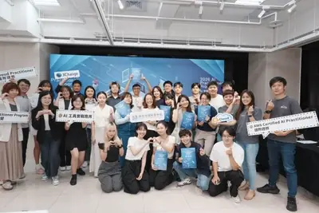
IT之家 10 月 3 日消息，AMD 当地时间本月 1 日宣布向航天客户交付 Versal AI Core XQRVC1902 自适应 SoC 的早期样品。 这一 SoC 采用 AMD 自主研发的航天级无盖封装，结合了保守的设计规则和增强型有机基板材料，搭配航天级芯片电容器。该组合减轻了太空环境中的热应力和机械应力对芯片的影响， 适合对可靠性要求极高的航天任务 。 AMD 目前正在按照航天组件标准中质量和可靠性的最高级别 —— 美国军用标准 MIL-PRF-38535 Y 级认证对 Versal AI Core XQRVC1902 自适应 SoC 进行
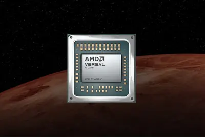
IT之家 10 月 3 日消息，Dell（戴尔）当地时间本月 6 日 （IT之家注：此为原始新闻稿标注时间） 宣布推出 2 款基于第 3 代英特尔酷睿 Ultra 处理器的强固型笔记本电脑新品。 新一代的 Dell Pro Rugged 13 Extreme 采用“全强固”设计，是 同级别最小巧最强大 的型号。其拥有 IP66 防尘防水，抗 1.8m 跌落，可在爆炸性环境中安全操作，配备 1400nits 的 13.3" 触控屏，板载 LPDDR5X 内存。 而新一代 Dell Pro Rugged 14 属于“半强固”机型，也是 同级别最小巧最强大 的
IT之家 10 月 3 日消息，小艺帮帮忙智能体是 HarmonyOS 6.0 上推出的探索性智能体。华为官网显示，因业务调整， 小艺帮帮忙智能体将不再支持后续新增的设备 。 据悉，小艺帮帮忙智能体是一个专注于应用操控的智能体，支持操控更多的场景，可在智能体对话列表页中找到小艺帮帮忙智能体，也可以在广场中搜索小艺帮帮忙来体验使用。 对于原 HarmonyOS 6.0 期间支持的设备，小艺帮帮忙智能体还可继续使用 ，用户的个人技能和定时计划任务在升级到 HarmonyOS 7.0 后仍可继续使用。 对于不支持小艺帮帮忙智能体的设备，无法通过数据克隆将智能体
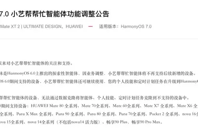
美國總統川普（Donald Trump）日前在白宮召集輝達（NVIDIA）執行長黃仁勳、SpaceXAI 創辦 […]